×
点击任意空白处或按 ESC 键退出全屏预览
步天 (Butian) 专为追求极致准确的数术研习者打造。基于天文历算级精度，融合八字命理、时家奇门与紫微斗数，深度贯彻全端协同、智能地方输入与合冲刑害动态联动。
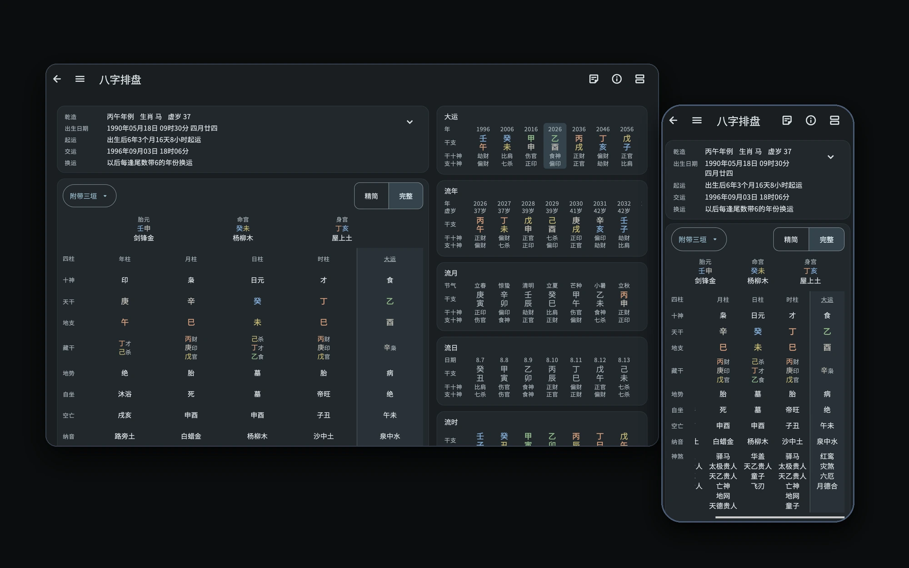
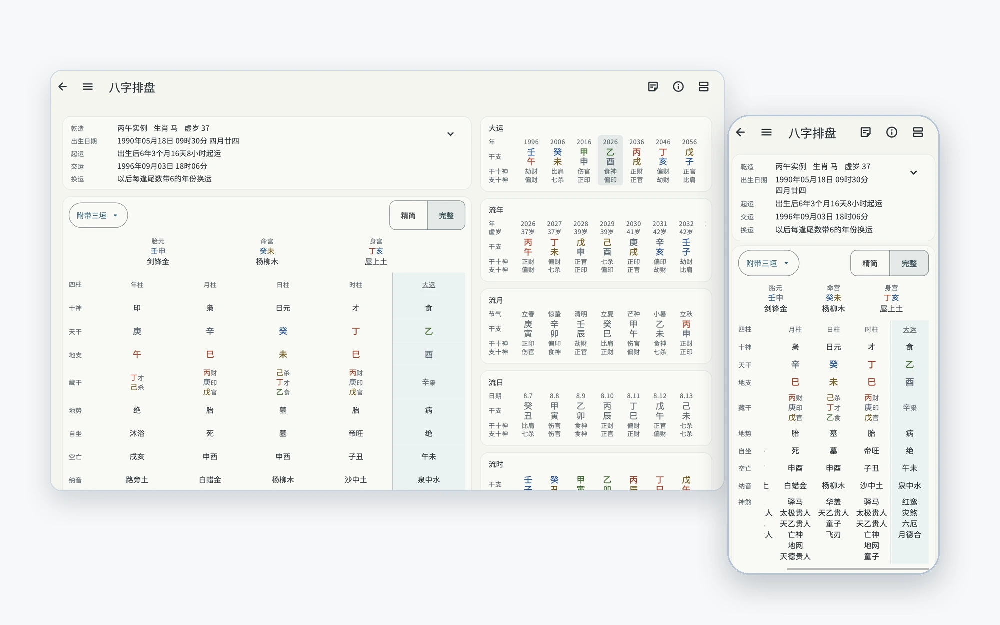
历法排盘失之毫厘，差之千里。步天采用底层天文时间解释模型，穷尽世界各大时区历史沿革与夏令时跳变陷阱，在输入端直观呈现具体的校正界面与平滑补偿提示。
古代以日中天为正午，现代钟表则统一采用东八区平太阳时。遇上夏令时跳变、时区变迁或跨经度出生，传统软件极易给出错误命盘。步天针对各类时间异象提供具体操作界面与自动校正：
春季时钟拨快跳过此时段（如 01:59:59 直跳 03:00:00），用户输入的 2 点在物理钟表上本不存在。如图所示，步天醒目显示校正提示卡：「此时当地夏令时时钟拨快跳过此时段，已自动按标准时校正时间：03:30」，无需用户困惑猜测。
秋季回拨时钟造成同一钟点在真实世界重复出现两次。步天提供清晰的单选确认机制（「01:30 (标准时)」vs「01:30 (夏令时)」），让您自主任选，完全杜绝排盘歧义。
针对我国 1986–1991 年实行夏令时等历史时段，系统智能识别并提供显式确认开关，保证老一辈出生时间的准确推算。
完整支持中国近现代中原、陇蜀、长白等各大历史时区及地方平太阳时（LMT）历史偏移切换。
结合出生地精准经度（1度=4分钟）与当日天文均时差（Equation of Time）实时合成，秒级直达真太阳时，兼顾早子时与晚子时日界换算。
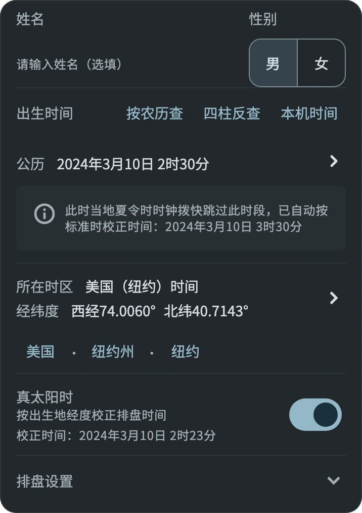
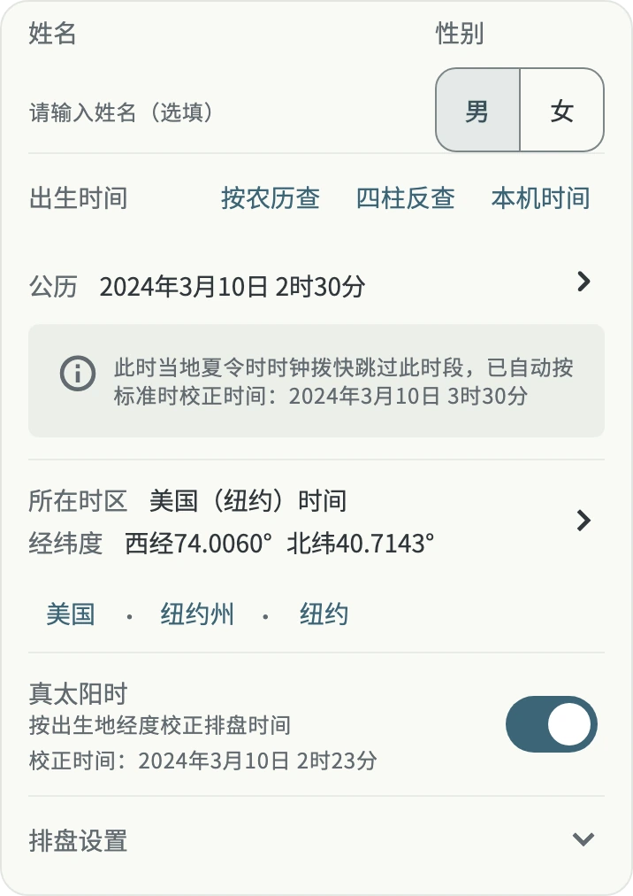
传统排盘软件强制用户查填晦涩的经纬度数字，体验极其繁琐。步天依托系统底层地理编码服务（在 Apple 平台直连 MapKit / CoreLocation），在指尖即可通过真实地名秒级直达。
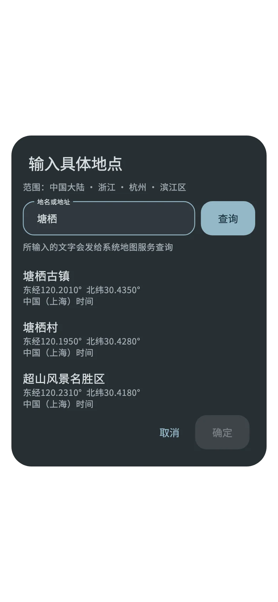
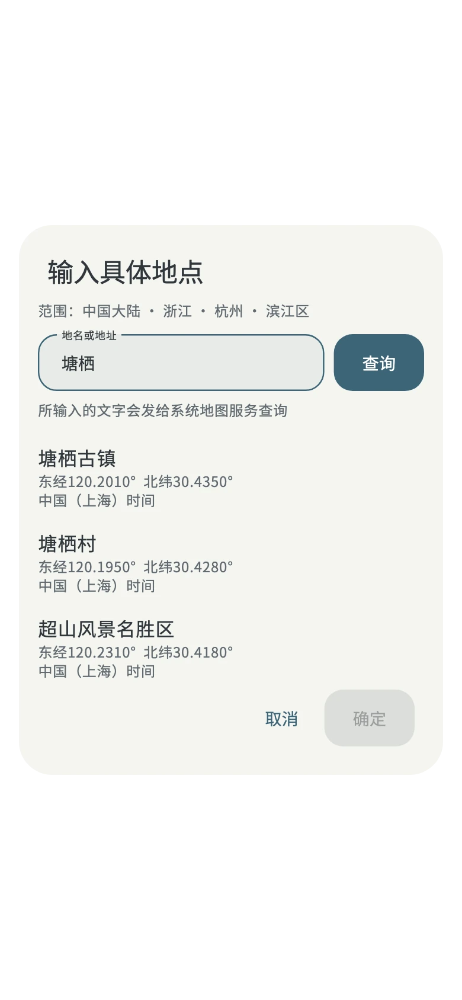
无论是以古镇命名的「塘栖古镇」、具体街道还是著名地标，用户仅需在已选省市范围内直接输入地名关键词，系统将瞬间调取候选列表。
选中候选地名后，自动获取高精度的东经/西经、北纬/南纬数值，无需切换任何第三方地图软件繁琐复制。
基于精确定位点坐标，智能推导对应的 IANA 标准时区并反填排盘配置，确保时区规则绝对无误。
地名请求完全由设备端向地图定位底层发起，步天没有任何自建中间服务器收集您的搜索记录，全流程私密安全。
研几断命贵在灵感与推演留痕。步天打造沉浸式同屏笔记系统，不仅支持边看命盘边查阅多条断语抽屉，更在具体的笔记编辑页中深度支持端侧神经网络离线语音输入。
在命盘旁侧呼出笔记抽屉，可在同一命盘下建立并查阅多条结构化断语（如「四柱用神与大运参看」、「合冲破害复盘」）；点击进入具体的笔记编辑页（NoteEditor）后，即可使用键盘录入或直接开启端侧离线语音快速记录心得：
在排盘同屏呼出抽屉，结构化归纳同一命盘下的多条推演断语，自动深度捕获当下所选的大运流年快照。
进入笔记编辑页，开口即成文字。严格限定于设备端神经网络离线识别，音频完全不落盘、不联网、不上传，私密安全。
转写内容以悬浮气泡即时呈现在编辑框上方，支持一键切换普通话（中国大陆）、粤语（香港）、国语（台湾）。
TextAutosave 实时持久化到本地 SQLite 沙盒，并依托 Apple iCloud 私有数据库在多设备间静默流转。
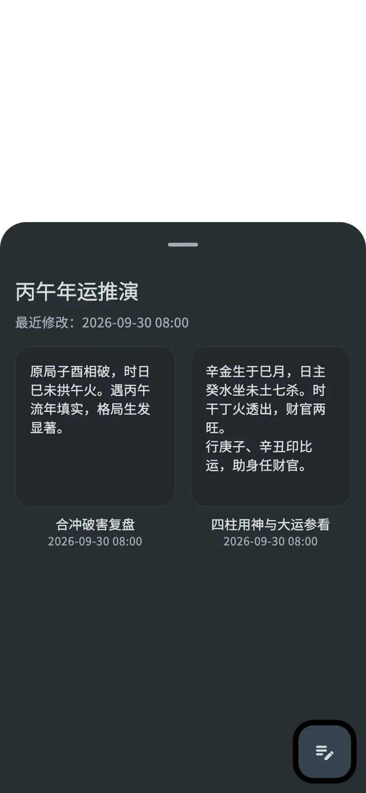
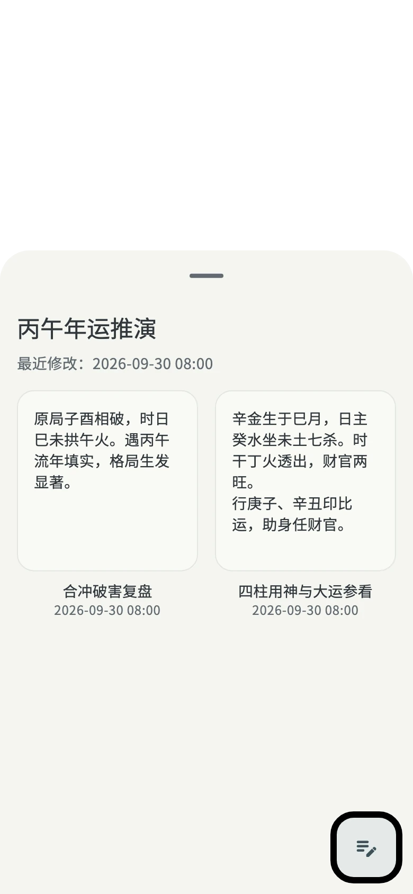
【同屏笔记抽屉】边看盘边复盘，同一命盘下建立多条断语，随盘自动记录运限快照
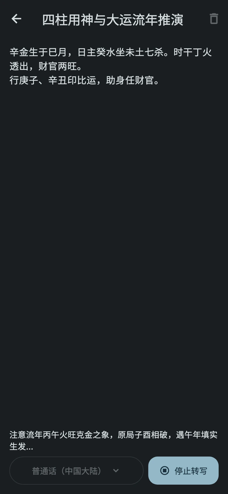
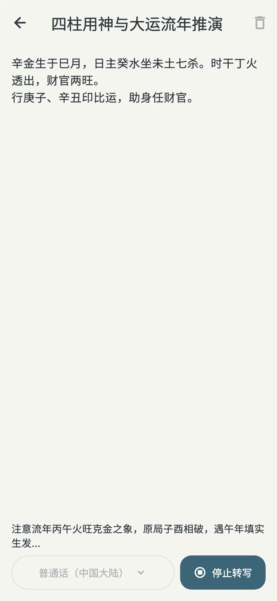
【笔记编辑页】点击条目进入编辑，顶部实时语音转写气泡，底部麦克风聆听控制与语种切换
独创命盘与合冲刑害关系卡深度双向联动体系。采用精简自适应布局，主盘紧凑吸顶，点击任意合化刑害条目，原局对应柱位瞬间高亮描边聚焦，生克制化一目了然！
如图所示，在精简布局下，上部主盘与下方展开的合冲刑害卡同屏呈现。当用户点选特定的合冲刑害胶囊时，不仅条目自身被选中，主盘中参与该关系的干支柱位立即点亮高亮轮廓与聚焦描边（RelationFocusMark）：
点击天干合化，原局对应干位即时激活轮廓光影，明晰化神与合化条件。
涵盖地支六合、三合局、半合、拱局、六冲、相破、相害与无恩/恃势/无礼/自刑，各支位同步联锁呈现。
步入不同大运或流年时，合冲刑害分析表自动随之重构重叠气机，原局与行运关系一网打尽。
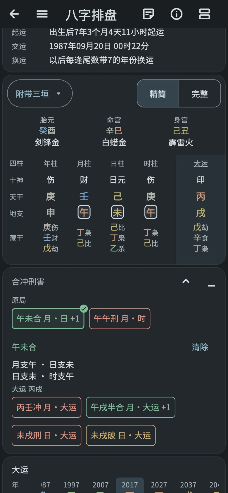
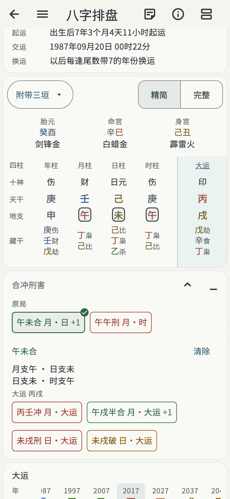
八字作为核心主力贯穿全端，时家奇门作为主要补充展台，紫微斗数专属呈现 macOS 桌面级全景星盘。
以八字排盘作为核心主力示例，覆盖移动掌中、平板自适应与桌面级五重联动完整体验。
单手从容操作，四柱干支、十神藏干、纳音五行、十二长生、神煞与运限时间轴紧凑呈现。
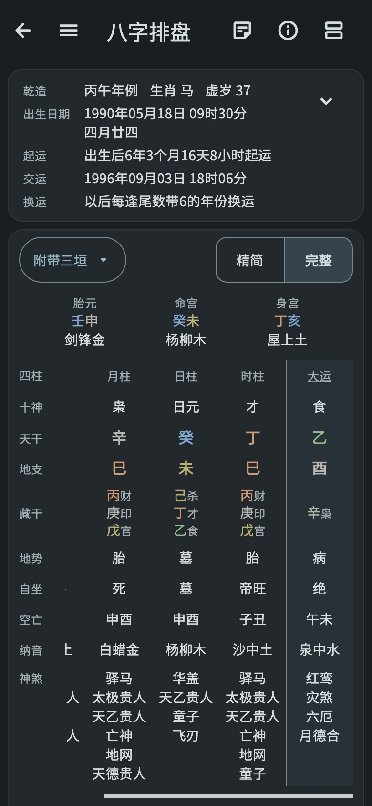
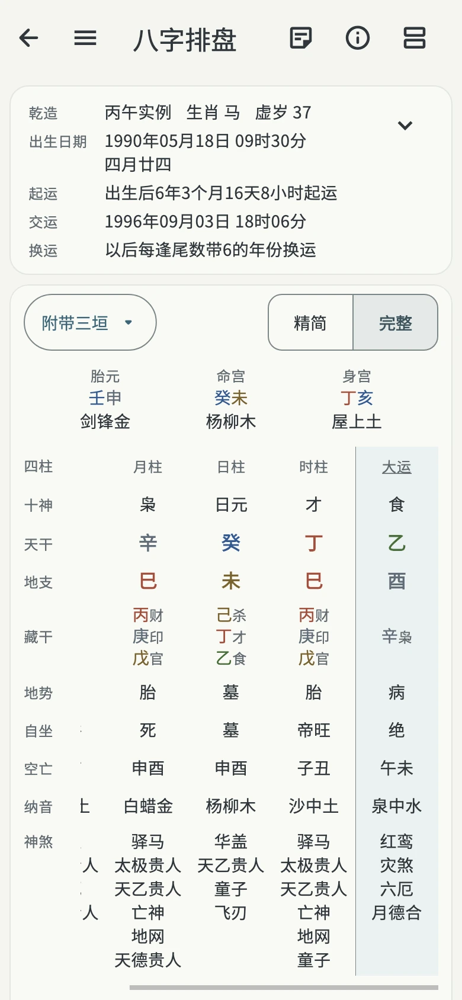
充分利用视网膜大屏，旺相休囚死五行生克、三垣附带与横滑大运流年深度一览无余。
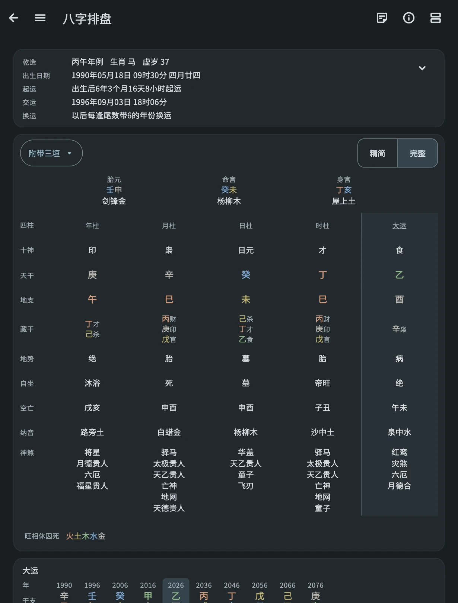
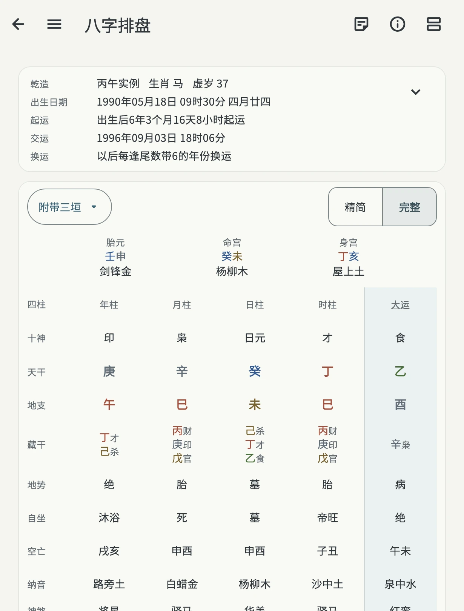
桌面级研几利器！四柱本盘与「大运 · 流年 · 流月 · 流日 · 流时」全景联动，多栏对照复盘。
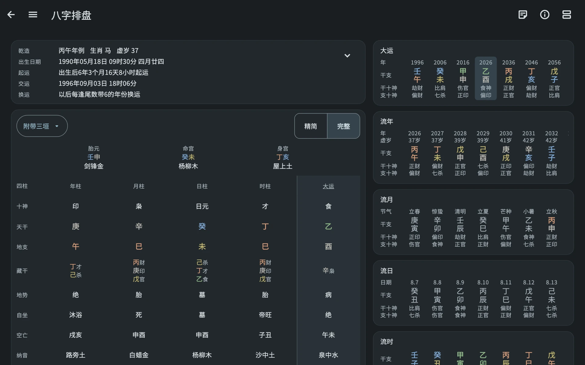
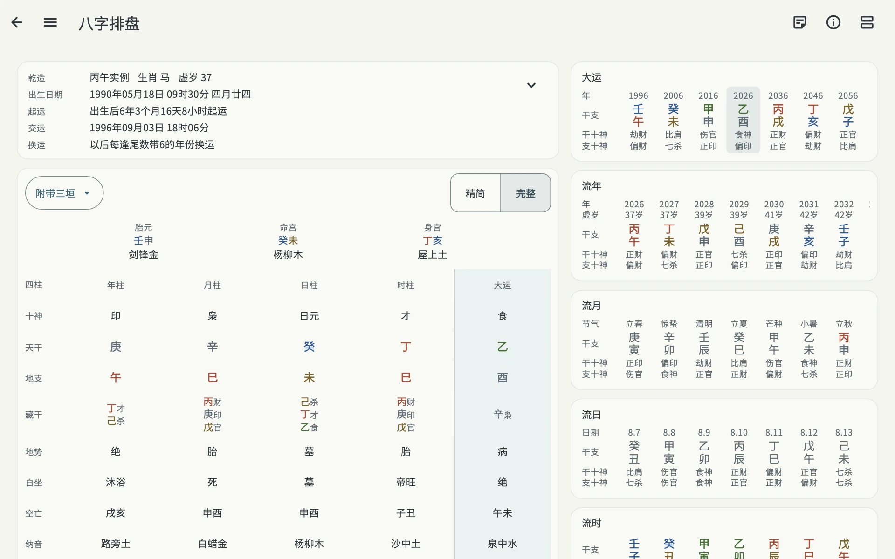
以八字为主轴的同时，步天将时家奇门作为主要补充展台，并带来专为 macOS 宽屏打造的紫微斗数全景星盘。
展示阴阳遁各局、天盘九星、人盘八门、神盘八神、地盘八卦与暗干奇仪。自动标示反吟伏吟、门迫宫迫、吉凶格局与直符直使速览。
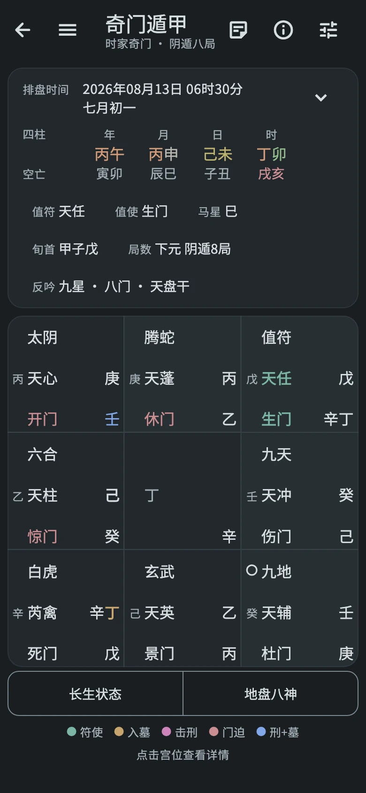
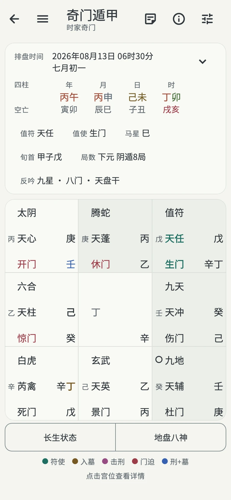
在 macOS 大屏下展现紫微十二宫位全景平铺、天盘全系主次星曜、四化飞星轨迹，并支持大屏三方四正高亮连线穿透。
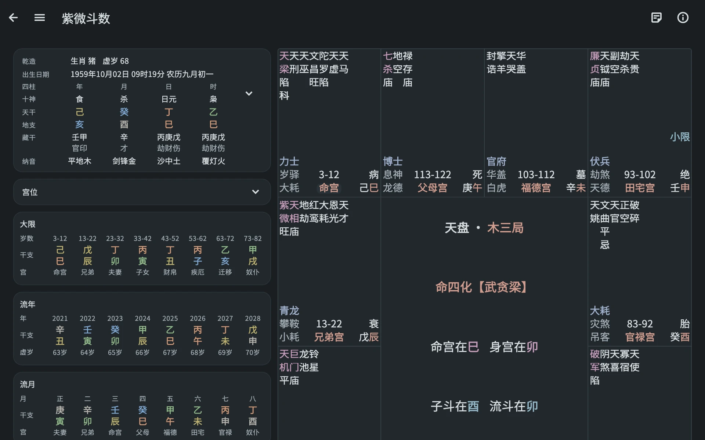
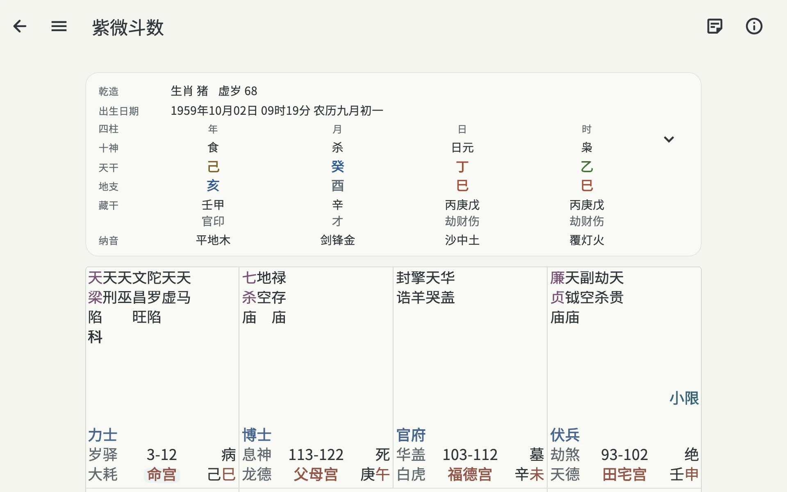
依托 Flutter 高性能统一渲染管线与纯自研四大天文数术算法库，深度调用各平台底层能力。
核心采用全套纯 Dart 自研算法库（bazi_lib、qimen_lib、ziwei_lib、chart_time_lib），时间解释快照一致，跨端体验严谨连贯。
在 Apple 平台直连 MapKit 地名检索、系统 Speech 端侧离线神经网络识别、iCloud CloudKit 私有云漫游与 StoreKit 通用购买。
全部排盘记录与断语笔记默认优先持久化在设备本地的 SQLite 安全沙盒中，断网亦可秒开，数据牢牢掌握在自己手中。
无强制账号注册、无第三方广告投放或用户行为追踪 SDK，杜绝隐私泄漏，纯粹回归工具本质。
关于真太阳时、地名检索、购买权益恢复与多端漫游的详细说明。
如果您在使用过程中遇到任何排盘疑虑、天文算法疑问或建议，欢迎随时联络。